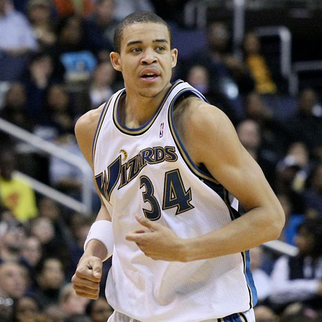

Great vegan athletes
on plant-based diet – men
August 10 2021,
Jelena Cvetković Š.
ELITE ATHLETS. More and more people are opting for veganism for a variety of reasons. And among them are also many athletes who achieve top results with a plant-based diet.
Does plat-based diet go hand in hand with sport? Of course. Even with a fully vegan lifestyle many top athletes including world champions and Olympic medallist are at the top of their game.
Scott Jurek,
ultramarathoner
He has claimed victories in nearly all of ultrarunning’s elite trail and road events including the historic 153-mile Spartathlon, the Hardrock 100, the Badwater 135-Mile Ultramarathon, and—his signature race—the Western States 100-Mile Endurance Run, which he won a record seven straight times. A passionate advocate for vegetarianism, he follows a 100% plant-based diet, which he credits for his endurance, recovery and consistent twenty year racing career.
James Wilks,
professional fighter
MMA fighter James Wilks went vegan following an injury he sustained in 2011. Wilks has a black belt in tae known do and Brazilian jiu-jitsu. He eats a vegan diet and was the subject of the film The Game Changers about the value of the vegan diet for serious athletes.
Lewis Hamilton,
six-time Formula One champion
“Going to watch ‘What The Health’ tonight. I’m on a mission to go vegan, people,” he wrote on Snapchat in September 2017. He added he wasn’t just interested in going plant-based for his own health. “Animal cruelty, global warming, and our personal health is at stake,” he explained.
Rich Roll,
ultra-endurance athlete
At age 40, and after years of struggling with drugs, alcohol, and unhealthy living, Rich dedicated his diet to plants and his body to purposeful action. Just two years later, he began clocking top finishes at Ultraman World Championships and leading a community of others looking to transform their lives.
Kyrie Irving,
professional basketball player
In 2019, Irving—along with 13 other professional athletes—invested in Beyond Meat and kicked off the vegan brand’s “Go Beyond” campaign as an athlete ambassador.
Kendrick Farris,
Olympic weightlifter
A vegan since 2014. “Now, my body recovers a lot faster. I feel lighter. My mind is a lot more clear,” he revealed.
Patrik Baboumian,
strongman and former bodybuilder
After years of being vegetarian, Baboumian went vegan in 2011. “I just found myself thinking that if I would have to kill the animals I ate with my own hands I couldn’t because I was too compassionate,” he revealed in an interview.
DeAndre Jordan,
professional basketball player
“My body is feeling awesome. I’ve never been healthier. I’ve converted a lot of my family and friends over, and slowly but surely they’re converting.”
Javale McGee,
professional basketball player
“You just feel really good, lighter. And there is a lot more energy you have throughout the day,”
Carl Lewis,
olympic sprinter
This winner of 10 Olympic medals is probably the best known vegan Olympian and also a vocal proponent of healthier food choices. Carl went vegan for health reasons as he was eager to obtain nutrients while minimising excessive calories.
Unsal Arik,
boxer
Since he gave up meat he has become the IBF European Champion, WBU World Champion and GBU World Champion. Later he turned vegan and since then has won the UBF European title twice, WBC Asia title and the BDB International German title.
Photo credits:
Opening Photo: Patrik Baboumian (Photo: Deivitrix, CC BY-SA 4.0 <https://creativecommons.org/licenses/by-sa/4.0>, via Wikimedia Commons)
Scott Jurek (Photo: "File:Scott Jurek, Ultramarathon Champion.jpg" by Windriverwild is licensed with CC BY-SA 3.0. To view a copy of this license, visit https://creativecommons.org/licenses/by-sa/3.0)
James Wilks (Photo: Wikifacts1 at English Wikipedia, CC BY-SA 3.0 <https://creativecommons.org/licenses/by-sa/3.0>, via Wikimedia Commons)
Lewis Hamilton (Photo: Jen_ross83, CC BY 2.0 <https://creativecommons.org/licenses/by/2.0>, via Wikimedia Commons)
Rich Roll (Photo: Compassion Over Killing, CC BY 2.0 <https://creativecommons.org/licenses/by/2.0>, via Wikimedia Commons)
Kyrie Irving (Photo: Keith Allison from Hanover, MD, USA, CC BY-SA 2.0 <https://creativecommons.org/licenses/by-sa/2.0>, via Wikimedia Commons)
Kendrick Farris (Photo: Screenshot: https://www.youtube.com/watch?v=_zv0a6nT2zc)
Patrik Baboumian (Photo: Deivitrix, CC BY-SA 4.0 <https://creativecommons.org/licenses/by-sa/4.0>, via Wikimedia Commons)
DeAndre Jordan (Photo: Keith Allison from Owings Mills, USA, CC BY-SA 2.0 <https://creativecommons.org/licenses/by-sa/2.0>, via Wikimedia Commons)
Javale McGee (Photo: Keith Allison from Baltimore, USA, CC BY-SA 2.0 <https://creativecommons.org/licenses/by-sa/2.0>, via Wikimedia Commons)
Carl Lewis (Photo: Manfred Werner - Tsui, CC BY-SA 3.0 <https://creativecommons.org/licenses/by-sa/3.0>, via Wikimedia Commons)
Unsal Arik (Photo: Ünsal Arik, CC BY-SA 4.0 <https://creativecommons.org/licenses/by-sa/4.0>, via Wikimedia Commons)